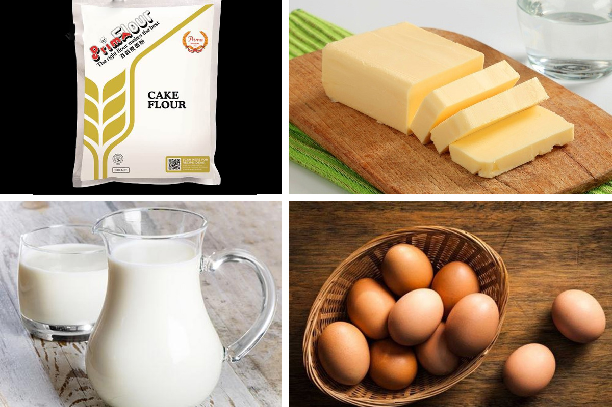

07/Jul
How to make Taiwanese cupcake

Taiwanese cupcake is famous for its fluffy softness, eating a piece of cake like it melts in your mouth. Today, i will teach you how to make delicious and soft cupcakes with Taiwanese flavors. Let's get started in the kitchen now!
Ingredients for making Taiwanese cupcake

Implementation tools
Oven, sieve, whisk, jewellery scales
How to processing Taiwanese cupcake
Make egg warm
Pour warm water into the pot, then place a large bowl over the top of the pot. Next, you put in a bowl of 100g eggs (about 3 eggs) and then use a whisk to stir the yolks and egg whites.
Next, you add 65g sugar and 10g honey to the eggs, then use a whisk to stir until the eggs reach a temperature of 40-45 degrees Celsius, then lift the eggs down.
Whip the whole egg
After warming the eggs, use a whisk to beat at low speed until the eggs have large air bubbles, then slowly increase the speed of whisking.
When the egg mixture is free of large air bubbles and there are small air bubbles, the mixture is thick and slightly fluffy, start beating the eggs at high speed until there are no air bubbles, the mixture is smooth, ivory white, lift the mixture. flows like a ribbon (Ribbon Stage state) then pass.
Mix the flour
Put 80g of flour, 2g of baking powder into the sieve and then sift the flour into the beaten egg mixture. Use a flat spatula to gently turn the dough from bottom to top in a folding manner to avoid breaking up too many air bubbles
When the flour mixture is thick and smooth, it is completely dissolved into the egg, then stop, do not stir for too long.
Mix flour with buttermilk
Put 25g of fresh milk with 25g in a bowl and place it under warm water (45 - 50 degrees Celsius) until the butter is completely dissolved in the milk.
Ladle some of the batter into the buttermilk bowl and stir to loosen the buttermilk mixture. Then you put the diluted buttermilk mixture into the flour bowl and continue to use a flat spatula to gently fold the dough in a fold until the dough is smooth and uniform.
Molding and baking
Preheat oven to 170 degrees Celsius for 10 minutes to help stabilize the heat in the oven.
Line the cake pan with baking paper and then slowly pour the dough into 2/3 of the mold to leave room for the cake to rise.
Tap the cake pan gently on the table to break up the large air bubbles inside the cake.
Next, you put the cake in the oven for 20 minutes at 170 degrees Celsius.
When the cake is done, take the cake out of the oven, then remove the cake from the baking pan and place it on a rack to cool completely.
Finished product
Taiwanese Cupcake is soft, firm and extremely delicious. Biting a piece of cake like it melts in your mouth. You can spread fresh cream or strawberry jam to eat with the cake!